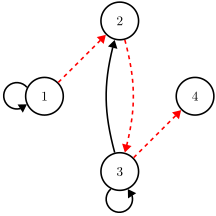

Relation Properties via Digraphs
- Definition. [Transitive relations] A relation $R$ on a set $S$ is called transitive if the following is true: if the pairs $(x, y)$ and $(y, z)$ are both in $R$, then the pair $(x, z)$ is also in $R$.
Correspondingly, if, for every two edges $(v_1, v_2)$ and $(v_2, v_3)$ that exist in the digraph $D$ of relation $R$, the edge $(v_1, v_3)$ also exists in $D$, then $R$ is transitive.A digraph with edges $(v_1, v_2)$ and $(v_2, v_3)$ implying the existence of $(v_1, v_3)$: transitive. Miriam Briskman, CC BY-NC 4.0.

A digraph with at least one pair of edges $(v_1, v_2)$ and $(v_2, v_3)$ but no edge $(v_1, v_3)$: not transitive. Miriam Briskman, CC BY-NC 4.0.
 These notes by Miriam Briskman are licensed under CC BY-NC 4.0 and based on sources.
These notes by Miriam Briskman are licensed under CC BY-NC 4.0 and based on sources.